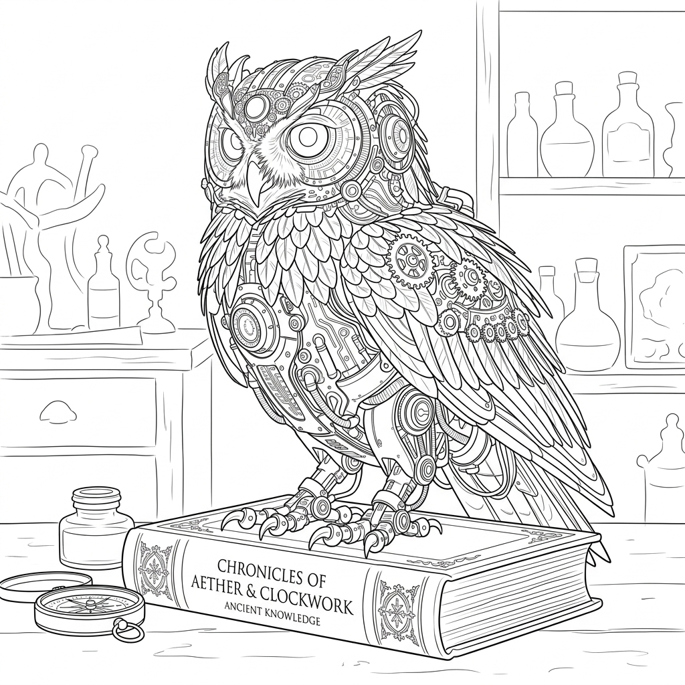

Google AI Studio & la Pipeline Multimodale: Dal B/N al Colore ai Contorni
Esplorazione dell'ambiente professionale Google AI Studio per l'orchestrazione di modelli linguistici e modelli di diffusione visiva (Imagen). L'esperimento pratico di metamorfosi grafica in tre stadi controllati.
Cos'è Google AI Studio e Perché è Fondamentale per i Docenti
Mentre le interfacce chat convenzionali nascondono la complessità tecnica sotto una barra di testo, Google AI Studio è la piattaforma ufficiale che consente a educatori e sviluppatori di interagire con i modelli Gemini e Imagen manipolando le leve fondamentali del modello.
Le istruzioni di sistema permettono di definire l'identità immutabile dell'IA (es. "Sei un esaminatore severo che valuta l'ortografia") prima che l'utente scriva anche una sola riga.
La temperatura (0.0 - 2.0) controlla la casualità della campionatura: a 0.0 il modello è deterministico e analitico; a 1.2 diventa creativo e divergente per compiti artistici.
Capacità di combinare in un unico flusso di inferenza prompt testuali e immagini ad alta risoluzione per generare descrizioni, modifiche stilistiche ed estrazioni vettoriali.
L'Esperimento Visivo in Tre Fasi: La Civetta Meccanica della Conoscenza
Nel nostro laboratorio con i docenti abbiamo messo alla prova i modelli di generazione delle immagini attraverso un processo rigoroso e sequenziale, dimostrando come l'IA possa essere indirizzata passo dopo passo:
Partenza da un'immagine fotografica o incisione in bianco e nero. Il modello multimodale scompone l'input nei canali di luminosità e mappa i volumi geometrici senza informazioni cromatiche.
Bianco e Nero
Studio chiaroscurale e tessitura meccanica monocromatica.
Colorazione Iridiscente
Reinterpretazione cromatica smeraldo, oro e ciano neon.

Soli Contorni Visibili
Isolamento vettoriale line art per attività laboratoriali.
I Prompt Utilizzati nel Laboratorio di Immagini
Ecco le sequenze di prompt testate dai docenti in Google AI Studio per ottenere i tre risultati sopra illustrati:
Applicazione Didattica a Scuola
La capacità di generare versioni a soli contorni lineari permette agli insegnanti di creare istantaneamente schede di disegno per la scuola primaria, tavole anatomiche da completare per le scienze, mappe geografiche mute personalizzate e schemi di montaggio per i laboratori di tecnologia, abbattendo i tempi di preparazione dei materiali inclusivi (BES e DSA).